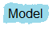
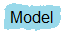

Title : Integrative Biomedicine (v2.0.0) Date / Time : 1/19/2012 2:43:27 PM
Parsing Time : 2.45
Files : 3666 Tags : 350415
Structures : 867 Variables : 5576 Integrals : 256 Implicits : 16 Curves : 392 Blocks : 1546
Panels : 571

 
